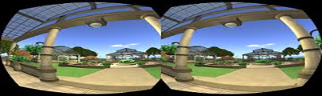

Clique sobre as áreas destacadas em vermelho

Detalhes sobre as especificações técnicas ainda não foram dados, mas já se sabe que o Oculus Rift terá dois visores OLED – um para cada olho – cujo posicionamento poderá ser regulado com um botão.
Com o Oculus Rift trazer ver os objetos ao nosso redor será extrememante divertido com a Câmera que os transporta para a realidade virtual, mas até agora ninguém tem muitas informações técnicas.
Sensores diversos e fones de ouvido também foram incorporados ao dispositivo. Estes últimos de simples não têm nada: o usuário poderá perceber por onde um inimigo se aproxima em um jogo, por exemplo, só pelo ruído.
O Oculus Rift deve ser empregado principalmente em jogos, logo, a apresentação dos joysticks Oculus Touch é bastante conveniente. O que provavelmente ninguém esperava é que esses acessórios fossem tão, digamos assim, esquisitos.